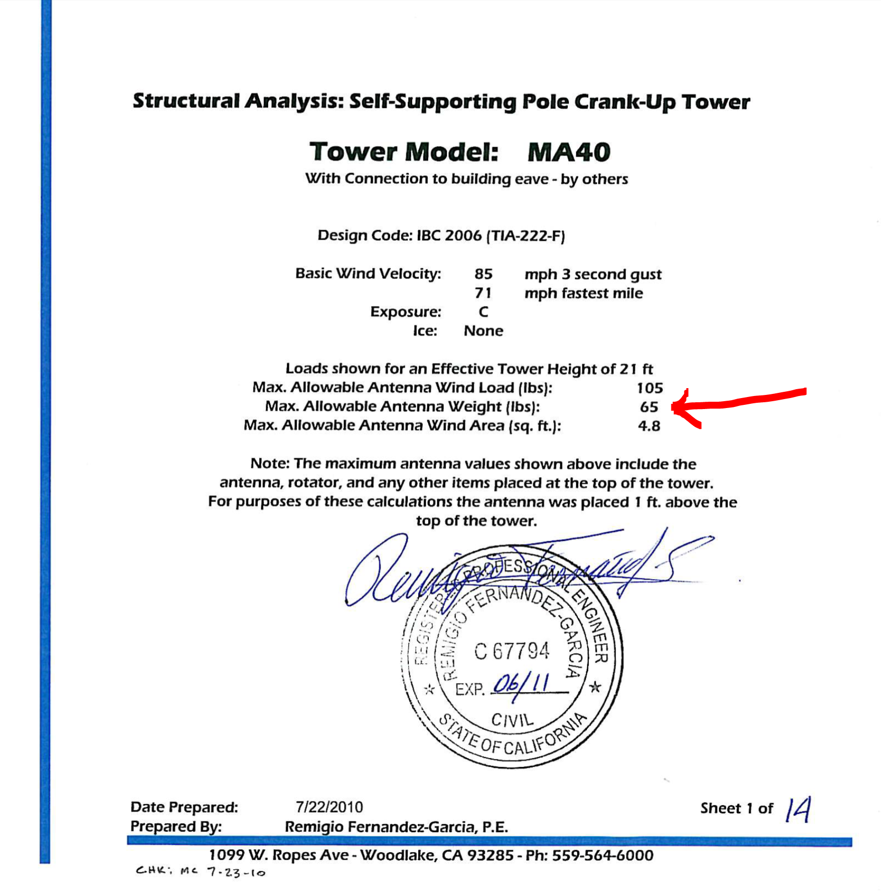

<!-- MHonArc v2.6.19+ -->
<!--X-Subject: Re: [NCDXC Chat] Perplexing mast/rotor problem -->
<!--X-From-R13: Dvpx @Y7W &#60;evpx.ax7vNtznvy.pbz> -->
<!--X-Date: Mon, 03 Aug 2020 12:36:50 &#45;0500 -->
<!--X-Message-Id: a95b677a&#45;9767&#45;3a08&#45;4a97&#45;6b322b54ed9d@gmail.com -->
<!--X-Content-Type: multipart/alternative -->
<!--X-Reference: 000001d669b8$70b1d590$521580b0$@comcast.net -->
<!--X-Derived: pngxoCJ8AP3H_.png -->
<!--X-Head-End-->
<!DOCTYPE HTML PUBLIC "-//W3C//DTD HTML 4.01 Transitional//EN"
        "http://www.w3.org/TR/html4/loose.dtd">
<html>
<head>

    <meta name="robots" content="noindex, nofollow">
<title>Re: [NCDXC Chat] Perplexing mast/rotor problem</title>
<link rev="made" href="mailto:rick.nk7i@gmail.com">
</head>
<body>
<!--X-Body-Begin-->
<!--X-User-Header-->
<!--X-User-Header-End-->
<!--X-TopPNI-->
<hr>
[<a href="msg20474.html">Date Prev</a>][<a href="msg20476.html">Date Next</a>][<a href="msg20474.html">Thread Prev</a>][<a href="msg20476.html">Thread Next</a>][<a href="maillist.html#20475">Date Index</a>][<a href="threads.html#20475">Thread Index</a>]
<!--X-TopPNI-End-->
<!--X-MsgBody-->
<!--X-Subject-Header-Begin-->
<h1>Re: [NCDXC Chat] Perplexing mast/rotor problem</h1>
<hr>
<!--X-Subject-Header-End-->
<!--X-Head-of-Message-->
<ul>
<li><em>To</em>: <a href="mailto:chat%40ncdxc.org">chat@ncdxc.org</a></li>
<li><em>Subject</em>: Re: [NCDXC Chat] Perplexing mast/rotor problem</li>
<li><em>From</em>: Rick NK7I &lt;<a href="mailto:rick.nk7i%40gmail.com">rick.nk7i@gmail.com</a>&gt;</li>
<li><em>Date</em>: Mon, 3 Aug 2020 10:36:26 -0700</li>
<li><em>Dkim-signature</em>: v=1; a=rsa-sha256; c=relaxed/relaxed; d=gmail.com; s=20161025;	h=from:subject:to:references:message-id:date:user-agent:mime-version	:in-reply-to:content-language;	bh=OF2J43lYU9qLuuW557W0UzzErVObsWF3b1whSme/rgA=;	b=bU7/s7O/t2O/jur94SNVmyc0MCbtDUw4ZXgL7fYCWnaIeakGETY/hm+ika/+c+SOJz	B0gzGffyO+cIxh1NKe6ZtddDcosPsSOpEaESJ0PS8cT+oVKcwaImYXMqntgXgWgG/HCQ	kOt5MuCeefk0jZy8AmKP6zVoACO52wI2msYxJ12BLj26HUhbmxDPzXqGJv3KE7oiMAIr	olAqL7ZbZmVvL7mMd21xywCmFapH/hitpCzjBeZvlKUD4pUsBEer96eX71JniCzTr0Ae	up5WuZieoudTcZnyQKz72hcCfEHCdBa4cANeyc5ocjL2jdt0TMWnJNijMs9KkKSLonsx	t93w==</li>
<li><em>In-reply-to</em>: &lt;000001d669b8$70b1d590$521580b0$@comcast.net&gt;</li>
<li><em>List-archive</em>: &lt;<a href="http://mail.ncdxc.org/mailman/private/chat_ncdxc.org/">http://mail.ncdxc.org/mailman/private/chat_ncdxc.org/</a>&gt;</li>
<li><em>List-help</em>: &lt;<a href="mailto:chat-request@ncdxc.org?subject=help">mailto:chat-request@ncdxc.org?subject=help</a>&gt;</li>
<li><em>List-id</em>: NCDXC Discussion List &lt;chat.ncdxc.org&gt;</li>
<li><em>List-post</em>: &lt;<a href="mailto:chat@ncdxc.org">mailto:chat@ncdxc.org</a>&gt;</li>
<li><em>List-subscribe</em>: &lt;<a href="http://mail.ncdxc.org/mailman/listinfo/chat_ncdxc.org">http://mail.ncdxc.org/mailman/listinfo/chat_ncdxc.org</a>&gt;,	&lt;<a href="mailto:chat-request@ncdxc.org?subject=subscribe">mailto:chat-request@ncdxc.org?subject=subscribe</a>&gt;</li>
<li><em>List-unsubscribe</em>: &lt;<a href="http://mail.ncdxc.org/mailman/options/chat_ncdxc.org">http://mail.ncdxc.org/mailman/options/chat_ncdxc.org</a>&gt;,	&lt;<a href="mailto:chat-request@ncdxc.org?subject=unsubscribe">mailto:chat-request@ncdxc.org?subject=unsubscribe</a>&gt;</li>
<li><em>References</em>: &lt;000001d669b8$70b1d590$521580b0$@comcast.net&gt;</li>
<li><em>User-agent</em>: Mozilla/5.0 (Windows NT 10.0; Win64; x64; rv:78.0) Gecko/20100101	Thunderbird/78.0.1</li>
</ul>
<!--X-Head-of-Message-End-->
<!--X-Head-Body-Sep-Begin-->
<hr>
<!--X-Head-Body-Sep-End-->
<!--X-Body-of-Message-->

  
  
    <p>A very quick review of that tower shows max load is exceeded by
      almost 50% with 84# of antenna (and dipole weight) in the LOWERED
      (21') position.<br>
    </p>
    <p>Be that as it may, oscillation can suggest that some part(s) are
      not moving as smoothly as intended.&#xA0; It may be time to replace the
      bearing(s).&#xA0; Moving smoothly is not a valid test, if the bearing
      wear allows wobble.&#xA0; Make sure the new bearing(s) have lube
      fitting(s) for an ANNUAL lube/check.</p>
    <p>Servicing the rotor bearings as well, should be part of the
      plan.&#xA0; "Play" in any part of that system, is not a good thing.<br>
    </p>
    <p>73,<br>
      Rick NK7I</p>
    <p><br>
    </p>
    <p></p>
    <div class="moz-cite-prefix">On 8/3/2020 10:06 AM, Bruce H. Bern via
      Chat wrote:<br>
    </div>
    <blockquote type="cite"
      cite="">
      
      
      
      <div class="WordSection1">I have a JK Navassa 5, as well as a 40m
        loaded rotatable dipole by JK sitting handsomely on my
        Tristao/US Tower MA40. I've owned the mast for almost 30 years,
        and refurbish it with new grade 8 hardware, pulleys, and cables
        every 7-10 years. The thrust bearing is at least that old and
        then some, and I've never replaced it. It's probably rusty, but
        I can still rotate the entire mast/antenna array easily by hand.
        The entire assembly- 37 foot mast, antennas- rotates, and its
        weight is supported by a single thrust bearing at the base. A
        short "rotor stub" of 4" length X 1 1/4"projects out of the
        bottom of the thrust bearing, and is coupled to a T2X rotor. The
        rotor stub has a 3/16" hole bored through its lower portion, and
        an 8" length of 2" galvanized mast couples to it with a 3/16"
        bolt which passes through the top of the mast piece and through
        the hole on the rotor stub. The bottom of the 8" section of mast
        is held in the clamp of the rotor.<o:p></o:p>
        <p class="MsoNormal"><o:p>&#xA0;</o:p></p>
        <p class="MsoNormal">Here's the problem: the rotor is located on
          a rotor plate that clamps to the bottom of the mast support
          (the "MARB" fixture). I've owned this mast through two houses
          and numerous disassemblies, and it's always been difficult to
          center the rotor under the rotor stub and its attached piece
          of mast. It's never been perfect, but the slop in the pinned
          coupling between the 8" piece of mast and the smaller rotor
          stub has always allowed sufficient "give" for smooth rotation.<o:p></o:p></p>
        <p class="MsoNormal"><o:p>&#xA0;</o:p></p>
        <p class="MsoNormal">Fast forward to my taking down my 37 lb
          Force 12 C-4, and putting up the JKs. I went from 37 lbs to 84
          lbs of total antenna! With the additional mass, there is a
          huge amount of angular momentum once the system starts
          turning. With the slight eccentricity introduced by the rotor
          mounting, the rotor tends to bind a bit, As the rotation slows
          and then speeds up an oscillation is introduced, and with
          enough time, the entire mast begins to resonate with visible
          and frightening flexing. <o:p></o:p></p>
        <p class="MsoNormal"><o:p>&#xA0;</o:p></p>
        <p class="MsoNormal">I had never noticed this with the F12. I've
          spent about 10 hours over the last 2 weeks trying to center
          and re-center the mast drivetrain. I have .064" of shimming at
          the rotor plate mount now (with zero, the Hygain T2X rotor
          actually ran into the mast base... so much for tolerances!) I
          also shimmed the mast section at the rotor clamp about .09".
          Everything looks centered, but as the pin at the bottom of the
          stub turns to 90 degrees away from the axis of the stub, thus
          eliminating the free play available from the 3/8" bolt sliding
          slightly in the coupling, the mast still binds enough to cause
          the rotor to groan a bit. <o:p></o:p></p>
        <p class="MsoNormal"><o:p>&#xA0;</o:p></p>
        <p class="MsoNormal">My only idea for a solution is to fabricate
          a U-joint of sorts as the transmission between the rotor and
          the rotor stub. I was thinking about simply making a crude
          U-joint by cutting the 8" mast section in two, and joining the
          two halves with a smaller piece of mast drilled for two bolts
          at 90 degree angles. I am concerned that by adding two more
          joints, with attendant play, I may exacerbate the jerky
          movement of the assembly and worsen things.<o:p></o:p></p>
        <p class="MsoNormal"><o:p>&#xA0;</o:p></p>
        <p class="MsoNormal">In speaking with the guys at US Tower, I
          learned that when they fabricate the thrust bearings/rotor
          stub assemblies, they always become slightly eccentric. He had
          never heard of my problem until someone called him the week
          before with the same issue.<o:p></o:p></p>
        <p class="MsoNormal"><o:p>&#xA0;</o:p></p>
        <p class="MsoNormal">My gratitude to anyone who has managed to
          read this entire email. Andy, K6ZP and I are friends and
          colleagues, and we both are very much enjoying the club. We
          are looking forward to true eyeballs with club members in the
          future.<o:p></o:p></p>
        <p class="MsoNormal"><o:p>&#xA0;</o:p></p>
        <p class="MsoNormal">Thanks, Bruce K3NQ<o:p></o:p></p>
        <p class="MsoNormal"><o:p>&#xA0;</o:p></p>
        <p class="MsoNormal"><o:p>&#xA0;</o:p></p>
        <p class="MsoNormal"><o:p>&#xA0;</o:p></p>
      </div>
      <br>
      <fieldset class="mimeAttachmentHeader"></fieldset>
      <pre class="moz-quote-pre" wrap="">_______________________________________________
Chat mailing list
<a rel="nofollow" class="moz-txt-link-abbreviated" href="mailto:Chat@ncdxc.org">Chat@ncdxc.org</a>
<a rel="nofollow" class="moz-txt-link-freetext" href="http://mail.ncdxc.org/mailman/listinfo/chat_ncdxc.org">http://mail.ncdxc.org/mailman/listinfo/chat_ncdxc.org</a>
</pre>
    </blockquote>
  


<!--X-Body-of-Message-End-->
<!--X-MsgBody-End-->
<!--X-Follow-Ups-->
<hr>
<!--X-Follow-Ups-End-->
<!--X-References-->
<ul><li><strong>References</strong>:
<ul>
<li><strong><a name="20474" href="msg20474.html">[NCDXC Chat] Perplexing mast/rotor problem</a></strong>
<ul><li><em>From:</em> &quot;Bruce H. Bern&quot; &lt;eagleyemd@comcast.net&gt;</li></ul></li>
</ul></li></ul>
<!--X-References-End-->
<!--X-BotPNI-->
<ul>
<li>Prev by Date:
<strong><a href="msg20474.html">[NCDXC Chat] Perplexing mast/rotor problem</a></strong>
</li>
<li>Next by Date:
<strong><a href="msg20476.html">Re: [NCDXC Chat] Perplexing mast/rotor problem</a></strong>
</li>
<li>Previous by thread:
<strong><a href="msg20474.html">[NCDXC Chat] Perplexing mast/rotor problem</a></strong>
</li>
<li>Next by thread:
<strong><a href="msg20476.html">Re: [NCDXC Chat] Perplexing mast/rotor problem</a></strong>
</li>
<li>Index(es):
<ul>
<li><a href="maillist.html#20475"><strong>Date</strong></a></li>
<li><a href="threads.html#20475"><strong>Thread</strong></a></li>
</ul>
</li>
</ul>

<!--X-BotPNI-End-->
<!--X-User-Footer-->
<!--X-User-Footer-End-->
</body>
</html>
